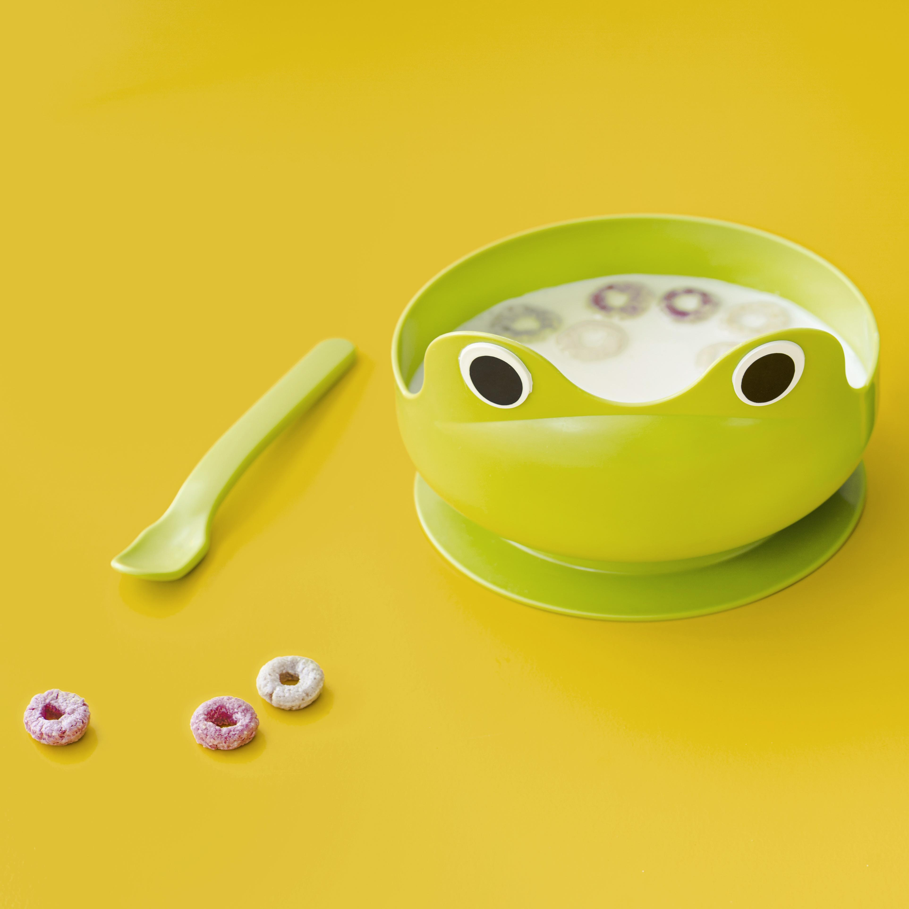

Soop

Dizeignd by Freepik (see they cant spel neeva)
Discription
Hot and warm and watery. You're not allowed to drink it from the bawl
Ingreejunts
- Seereal
- Bawl
- Miwlk (or worta if youv run out)
- Spoon
Steps
- Get a box to use as a coocker
- Put the bowl on it
- Put the seerial and the miwk/warter in
- Now it is a matter of debate whether to add the cereal first or the milk, in my reasoned opinion it's best to add the cereal first because otherwise you're going to be pouring cereal into a bowl full of milk and you'll splash milk onto the carpet and even if mum doesn't notice (which you know she will) it will smell after a while and she'll catch you anyway.
- Stir it around
- Have a taste of the milk and pretend like your tryng to see if it's hot enough yet
- Keep going until it's hot enough
- Eat it
Home